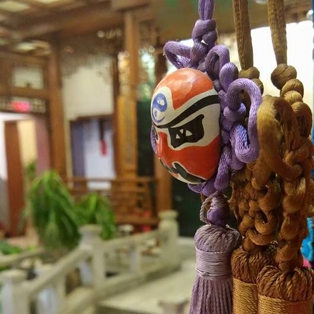
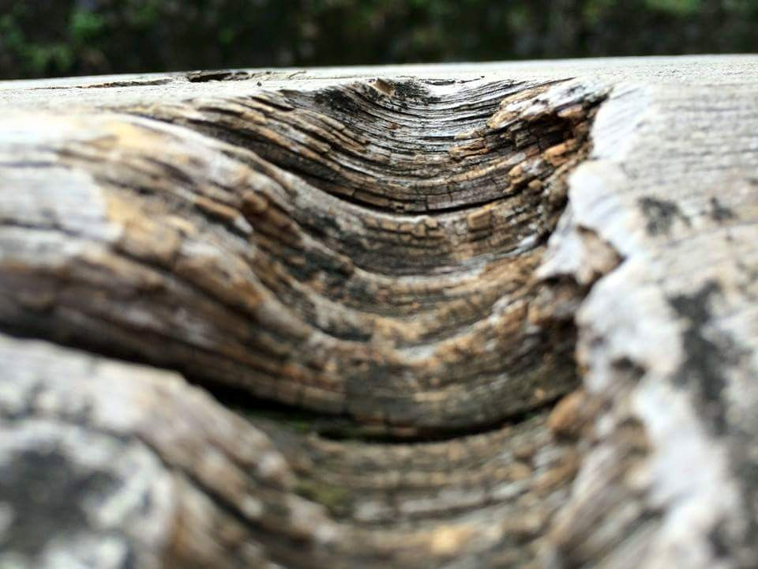
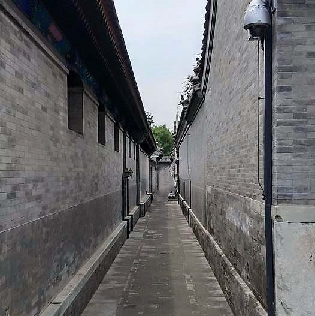

November 12th, 2016
Saturday, Robert's Happy Day.
Hi again! Today is a very important day. can you guess? Today is my pet ant's BIRTHDAY. He/she is now officially 1 year old!!! Im so excited. That's why im rewarding it honey today!!! Happy birthday, Robert! Until next time, my dear fans!

November 11th, 2016
Cry me a river.
Hi all, today is a very very very sad day... Just this morning, something terrible happened. I could barely bare the immense pain that my nerve endings sent towards me...My vision almost gave in to the pain. My life flashed past me. I was thinking of all the wrong doings in my life... I prayed to god for relieving me of this unbearable pain. The pain that i had brought upon myself, for stubbing my toe on the table leg.

November 10th,2016
Was it really worth it?
Hello, my dear fans and follower. This date marks the day that I have made the biggest decision in my life. Just this morning, I woke up just like any other day, however what lies waiting for me was different. This morning, I had to choose between strawberry or chocolate milk for my cereal. I pondered for almost 5 minute! Before coming to the decision of not eating cereal this morning. Was my decision right? Was eating bread because I could not decide which flavour of milk to drink really worth it?

November 9th,2016
The memories.
The memories falshed through my brain. The same day last year, something important happened. On this day of last year, I ended the life of a whole colony. On this day last year, I took a lot of lives. What should I do with this memory of taking lives? How should i rid of this memory. This memory of placing ant poison and letting them bring back to their colony. Save me.
